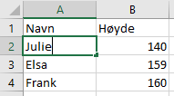

4.1 Undersøkelser
I Statistikk og sannsynlighet handler alt om å samle inn data. Alt fra hvor høy sannsynlighet det er for å få en sekser på en terning, til målinger av hvilken frukt frukten som er mest likt i klassen.
Når vi gjør undersøkelser samler vi inn relevant informasjon. Vi bryr oss ikke om høyden eller øyefarge, når det kommer til den mest populære filmen. Men alder kan være interessant, om vi er interessert i å se hvilken film visse aldersgrupper liker.
Eksempel 1:
Arild er intresert i hvem som kaster lengst i familien sin. Han velger at alle skal kaste den samme steinen fra det samme stedet.
Når han samler inn dataen velger han fornavn, og lengden på hvor langt det blir kastet i meter.
NB: Det er viktig å måle data med samme enhet!
Etter han har sammenlignet dataen kan han se at moren hans var den som kastet lengst.
Øve-Oppgaver:
-
Undersøk hvem i familien som kan drikke fortest. Hvilke data er det relevant å samle inn?
-
Kom med eksempler på hvor det er relevant å vite alder.
Fasit:
Oppgave 1
Oppgave 2
4.2 Tabeller
Når man samler inn informasjon er det viktig å holde styr på dataen, og hvem dataen peker tilbake på. Som f.eks. at Per sover 8 timer, mens Ask sover 9 timer.
Vi har flere måtter å lagre daten på. Men i dette kapitlet skal vi se på tabeller. I en tabell er det lett å se hva infoen handler om. En tabell ser slik ut:
Eksempel 2:
Vi bruker dataen fra eksemplet over med søvn.
| Navn | Timer søvn |
|---|---|
| Per | 8 timer |
| Ask | 9 timer |
Som du kan se står det øverst hvilken datatype, og under står dataen som er samlet inn. Man kan også se at vannrett står dataen som tilhører hvem. Per sov 8 timer, mens Ask 9.
Øve-oppgaver:
Bruk daten fra oppgave 4.1.1 og fyll den inn i en tabell.
Fyll denne infoen inn i en tabell. Ali liker katter, Nils liker hunder mens Johannes liker delfiner.
Fasit:
Oppgave 1
Her må du fylle inn infoen din, men det skal se ut som dette:
| Navn | Tid drukket |
|---|---|
| Navn 1 | Tid 1 |
| Navn 2 | Tid 2 |
Oppgave 2
4.3 Excel
Nå skal vi se på en måtte man kan lett lage tabeller digitalt, f.eks. på mobil eller pc-en. Dette programet heter excel. Vi skal se på hvordan vi kan lage en tabell. Sånn ser excel ut:

For å legge til info trykker man på en av rutene, og skriver inn infoen. Da vil det se slik ut:
Vi bør legge kanter rundt all infoen, så det er lettere å se hva som tilhører hva. Da bruker vi denne knapen:

Da får vi en tydlig linje rundt alle boksene. Også bruker vi denne knapen:

Til å fylle inn en farge på toppen, så det er lettere å skille mellom info og datatyper. Alle disse verktøyene krever at du markerer hvor du skal gjøre tingene.
Du vil til slutt ende opp med en tabell som ser slik ut

Øve-Oppgaver:
Gjennskap tabellen som ble brukt over.
Fasit:
Oppgave 1
4.4 Median og typetall
Nå skal vi se på to måtter man kan lese av tabeller for å finne ut en type info.
Median er når vi finner tallet i midten. Si vi har en tabell som denne:
| Navn | Alder |
|---|---|
| Ninthuya | 14 |
| Mia | 12 |
| Fatima | 15 |
Da må vi først sette talene i stigende rekefølge, fra minst til størst. 12, 14, 15. Da ser vi at 14 er i midten, og dette blir da medianen.
Om det er to tall i midten:
Tall 1 + Tall 2
2
Det andre tallet vi kan finne er typetall. Dette er tallet som går igjen flest ganger.
Eksempel 3:
Vi har fått gitt tallene
10, 3, 2, 10, 4, 5, 10.
Her kan man tydelig se at 10 går igjen flest ganger.
Typetall = Tallet som går igjen flest ganger
Øve-Oppgaver:
Finn medianen: 10, 233, 43, 42, 98.
Finn medianen: 4, 3, 5, 2, 4, 1
Finn typetall: 3, 5, 2, 5, 2, 5, 4